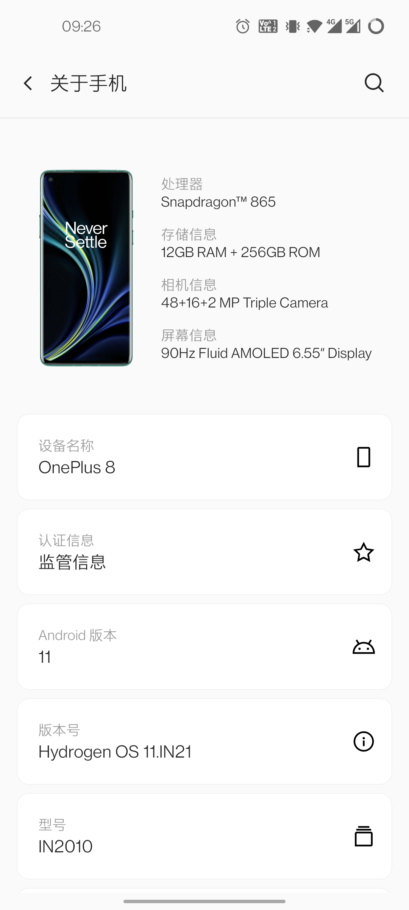
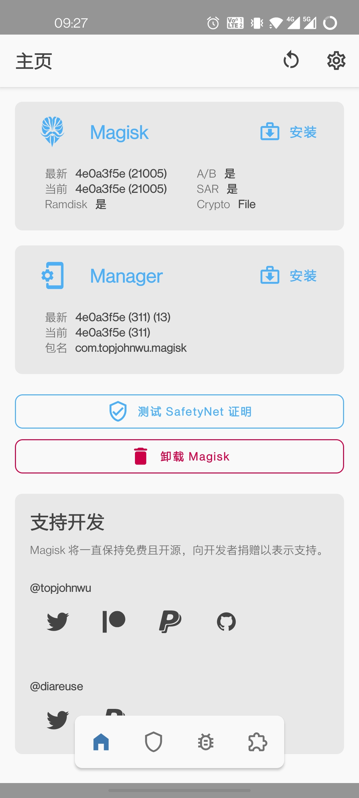
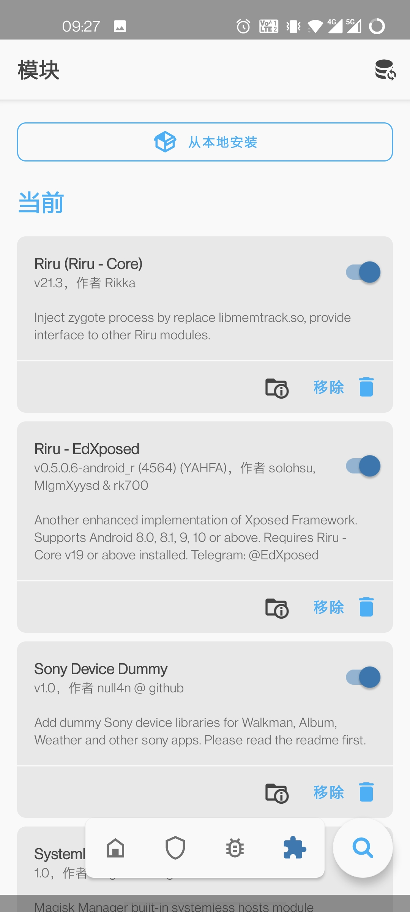
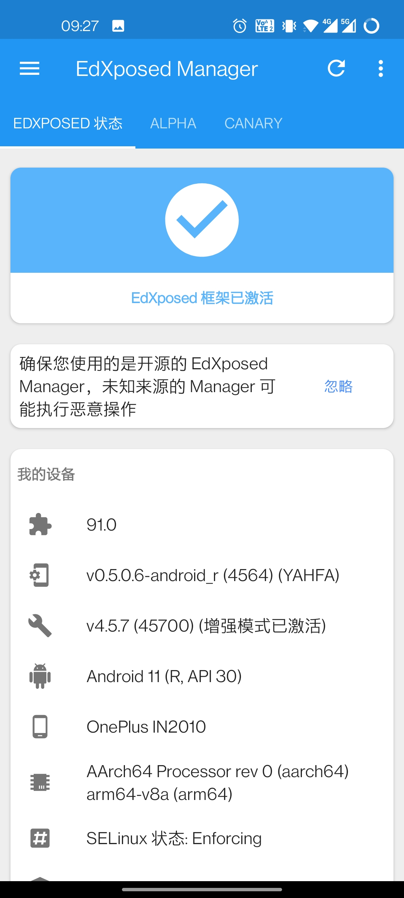

记录下手里一加8愉快的折腾之旅~
准备工作
解锁Bootloader且打开USB调试的一加8
氢OS Android11 Rom包
Payload Dumber
platform-tools
打包下载： pan.baidu.com/s/1afSr1snXan4LoBLX9l0Urg 【pcge】
刷入Magisk
制作magisk_patched.img
将官方包内的
payload.bin解压并放入Payload Dumber 的payload_input目录打开
payload_dumper.exe（看到boot解压出来就可以关闭了）打开payload_output目录，将解压出的
boot.img复制到手机根目录下载并安装Magisk最新版本 (https://github.com/topjohnwu/Magisk/releases)
选择安装Magisk-选择并修补一个文件，选中放在根目录的
boot.img，等待修补完成将手机download目录下的修补完成的
magisk_patched.img复制到电脑
工具刷入mgisk_patched.img
- 将
mgisk_patched.img放入 platform-tools 目录下 - 运行
打开CMD命令行.batadb reboot bootloaderfastboot flash boot_a magisk_patched.imgfastboot flash boot_b magisk_patched.imgfastboot reboot
刷入EdXposed
- 刷入
Riru - Core模块 - 刷入
Riru - EdXposed(YAHFA)或Riru - EdXposed(SandHook)模块 - 安装最新的
Edxposed Manager
总结与注意事项
- 制作
mgisk_patched.img时要用最新的 v8.0.x版本，不能使用以往的v21.0版本 - 刷写
mgisk_patched.img时 a/b分区都要 - 如果因刷入不兼容的模块导致无法开机，可以尝试卸载全部magisk模块
adb shellmagisk --remove-modulesadb reboot



